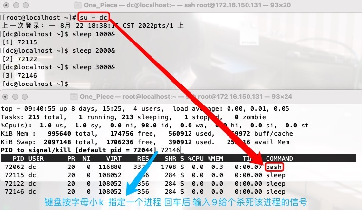

查看进程
进程回顾!!¶
<进程>是 操作系统分配资源 的最小单位; <线程>是程序执行/ cpu调度 的最小单位
程序 -- 一堆代码文件
进程 -- 进程 = 资源申请(开辟内存空间) + 程序执行(运行代码)
一般会笼统的说是程序的运行过程; 严谨点这种说法指的是线程 即进程 = 资源申请 + 多个线程执行
亦或者说是操作系统控制着硬件去运行程序的过程;
进程是操作系统最核心的概念,没有之一!
并发 -- 多个 任务 看起来 是 同时运行 的即可.
OS的多道技术实现并发: (这里讨论一个cpu的情况下),先将多个任务读到内存里,
实现空间上的复用 -- 任务跟任务之间内存空间上实现物理(即硬件)层面的互相隔离;
详细来说,就涉及到虚拟内存,虚拟地址,内存分页等OS内存管理的知识啦..不必深究!!
实现时间上的复用 -- 简单来说, cpu在多个任务之间快速来回切换..
通常采用的是时间片轮转的抢占式调度方式..由于CPU的执行效率非常高,时间片非常短,
在各个任务之间快速地切换，给人的感觉就是多个任务在"同时进行"
Ps: cpu的性能很强,能快速在上万个任务之间切换,但也要受限于内存能装下上万个任务..
提升计算机的性能 -- 加内存条;提升软件的启动速度,IO相关 -- 用固态硬盘..
并行 -- 多个 任务 是 真正的 同时运行 的. 只有 多核 才能实现并行..
4核8线程, 比纯8核性能低一些,比纯4核要强一些..
4核 -- 不管真实情况下有多个cpu,但4个核心就相当于4个cpu;
8线程 -- 每一个核可以同时运行两条流水线; 4X2=8;
线程 -- 随着计算机的发展, 对CPU的要求越来越高, 进程之间的切换开销较大, 已经无法满足越来越复杂的程序的 要求,于是就发明了线程.它是从进程里剥离出的一个概念. 单指进程概念里 代码的执行过程.
一个进程内至少有一个线程.. 线程才是cpu上的执行单位(即上文的任务严谨点指的就是线程)
强调! cpu是运行代码的,硬盘、内存、网卡等硬件设备才是做IO的
多线程 -- 一个进程内开多个线程, 注意哦 是 一个 进程
打个比方,OS是一个工厂,一个进程就是该工厂的一个车间,车间是一个资源单位;
一个车间里面可以有用于加工的一条或多条流水线(线程)
特点: 一个进程里的多个线程可以 共享 该进程的内存资源!!
当然线程拥有属于自己的一小部分资源, 就是栈空间, 保存其运行状态和局部自动变量的
不同进程里的多个线程的内存资源 互相隔离 !!
任务的三种运行状态 -- 非阻塞态(运行态 就绪态)、阻塞态
提交任务的方式 -- 同步、异步
Ps: 提交任务的方式与任务的三种运行状态不能混为一谈!!尽管同步跟阻塞都会有一种让人等待的感觉...
以同步提交的方式提交的任务,会在原地等待,在此期间任务可能会进入阻塞态或非阻塞态..
Q: 若需要 并发 10个任务,如何实现？
并发第一反应是cpu会在10个任务之间不停调度,跟4核8线程什么的并行没直接关系..
A: 方案一:一个车间里开10条流水线; 方案二: 有10个车间,每个车间都只有一条流水线..
前者肯定优于后者,因为启用进程的开销比线程大. 启动进程涉及到非常耗费资源的申请内存空间的IO操作.
启用线程就是开一条流水线,就只需要通知操作系统一声,叫OS帮忙调度下此流水线..
So, 若只是并发的话,推荐一个进程里开多个线程..
Ps: nginx不是单纯使用方案一,假设cpu是4核的,就会开启4个进程,若每个进程里有20个线程,就可以并发80个任务..
乘上启下:
先理清几个说法
1> 因为一个进程内至少有一个线程,so,我们说cpu调度进程,准确点是指cpu调度进程内的那个线程..
2> 并行只适用于多核,若是4核,意味着可以并行4个线程.
每个核不可能长时间固定调度同一个线程,核就需要在多个线程之间切换,方式之一就是时间片..
`ps aux`查看进程信息,没有特殊指明多线程的话,可以简单理解成查看进程里那一个线程的信息.
`任务的三种运行状态`之间的切换同理.此处的任务可以简单理解成线程.
补充几个知识点(自己理解的很笼统,不是很准确,但大体意思到差不差的):
作业、程序、进程之间的关系 详见0_计算机基础/2_操作系统.md 多道技术!!! -- 并发 这部分的内容
▲ 父子进程
同一个程序可能对应多个进程
父进程:程序运行时产生的第一个进程
子进程:由父进程衍生fork()出来的进程,子进程几乎是父进程的完全复制(PID肯定是不一样的)
子进程再调用exec把自身替换为新的进程,PID与PPID是不变的
但原来子进程的代码段、堆栈段、数据段会被新的内容取代,用来执行新的程序
这样fork和exec就成为一种组合,虽然这种组合会造成较大负担
注意:如果父进程终止,子进程也会随之被终止
fork的用途:在许多客户-服务器C/S应用程序中,会有许多fork执行同一个程序的进程,
用fork函数创建多个子进程来实现客户端的请求业务,因此用fork方式可以实现服务器端的并发应用
服务器端可以消除客户端请求所要创建新进程的开销
Ps:可能现目前看来不合理,但这样设计有历史遗留,刚开始时内存很小等导致的.
(具体的暂且不想深入研究了..)
fork-exec的由来可参考 https://www.zhihu.com/question/66902460
查看进程信息¶
ps aux¶
ps aux 查看操作系统中 那一时刻 所有运行的进程( 前后台的都有 )信息 不具备实时性.
选项:
-a 该终端所有进程;
-u 显示用户 ;
-x 显示命令的绝对路径.
Ps: windows上有实现类似功能的命令 tasklist | findstr 具体某一个进程
[root@localhost ~]# ps aux | head -n 3
USER PID %CPU %MEM VSZ RSS TTY STAT START TIME COMMAND
root 1 0.0 0.3 199756 3036 ? Ss 8月05 4:55 /usr/lib/systemd/systemd..
root 2 0.0 0.0 0 0 ? S 8月05 0:00 [kthreadd]
Ps:PID为1的进程是个软件,详细介绍详见1_linux基础/0_准备工作.md Linux启动流程这一小节的内容!!
"""
USER 运行进程的用户
PID 进程的ID号
%CPU CPU占用率,该进程占用CPU的百分比
%MEM 内存占用率
VSZ 占用虚拟内存的大小(单位字节Kb)
简单的来说,进程在启动时会预先申请好一块线性空间,分配好后,不一定会全用
内存映射、共享的动态库、或者向系统申请了更多的堆等,都会扩展线性空间大小TnT
注意!!!
这里的虚拟内存不是指swap分区虚拟内存的大小!!两者没有关系.
我觉得VSZ是指进程需要的线性地址空间的大小..Hhhh
RSS 进程实际占用的物理内存大小(单位字节Kb)
TTY 该进程在哪个终端运行的
`？` 问号代表没有在任何一个终端提交,代表开机自动启动起来的
终端？CTTS -- MULTICS -- unix -- minix -- linux -- linux发行版:redhat、centos
linux继承了MULTICS,自动保留几个联机终端..
6个真实的终端 /dev/tty1 ... /dev/tty6
xshell远程连接看到的终端是预留的终端以外通过ssh虚拟模拟出来的终端,不是真实的终端.
/dev/pts/0 /dev/pts/1 0代表第一个虚拟的Bash Shell终端 1代表第2个 以此类推..
[root@localhost ~]# tty
/dev/pts/0
★STAT 进程的状态 (最好记住!!) R、S、D、T、Z、X
START 进程的启动时间
TIME 进程占用CPU的总时间
COMMAND 进程的绝对路径,当然有些没有绝对路径
用[]包裹起来的代表内核态(运行操作系统的代码)的进程
不带[]号的代表用户态(运行应用程序代码)进程
"""
pstree¶
查看进程树
查看某一个进程的进程树: pstree 进程PID
[root@localhost ~]# ps aux | grep nginx
root 56062 0.0 0.0 112824 988 pts/1 S+ 18:21 0:00 grep --color=auto nginx
root 75065 0.0 0.0 20576 8 ? Ss 8月21 0:00 nginx: master process /usr/local/nginx-1.22.0/sbin/nginx
nobody 75066 0.0 0.0 23104 8 ? S 8月21 0:00 nginx: worker process
[root@localhost ~]# pstree 75065
nginx───nginx
注意哦!若是最小化安装,没有pstree命令,安装下即可 rpm -qf `which pstree`
ppid¶
ppid 即parent pid.. 代表这个进程是由哪个进程发展衍生而来的, 即查看父进程PID
[root@localhost ~]# ps -elf | head -1
F S UID PID PPID C PRI NI ADDR SZ WCHAN STIME TTY TIME CMD
[root@localhost ~]# ps -elf | grep [n]ginx
1 S root 75065 1 0 80 0 - 5144 sigsus 8月21 ? 00:00:00 nginx: master process /usr/local/nginx-1.22.0/sbin/nginx
## 可以发现 75066进程的父进程是75065
5 S nobody 75066 75065 0 80 0 - 5776 ep_pol 8月21 ? 00:00:00 nginx: worker process
pgrep¶
pgrep 进程名
查看由某个用户开启的进程 pgrep -l -u 用户名
[root@localhost ~]# pgrep -l -u root | head -5
1 systemd
2 kthreadd
4 kworker/0:0H
6 ksoftirqd/0
7 migration/0
[root@localhost ~]# id dc
uid=1001(dc) gid=1001(dc) 组=1001(dc)
[root@localhost ~]# su - dc -c "sleep 10000" &
[2] 57035
[root@localhost ~]# pgrep -l -u dc
57037 sleep
## 这种方式的话,就需要看第一列是dc
[root@localhost ~]# ps aux | grep dc
root 1987 0.0 0.0 376184 176 ? Sl 8月14 0:00 /usr/libexec/ibus-dconf
root 2018 0.0 0.0 187400 356 ? Sl 8月14 0:00 /usr/libexec/dconf-service
root 57035 0.0 0.3 231964 3456 pts/1 S 18:38 0:00 su - dc -c sleep 10000
dc 57037 0.0 0.0 108052 360 ? Ss 18:38 0:00 sleep 10000
root 57196 0.0 0.0 112828 984 pts/1 S+ 18:40 0:00 grep --color=auto dc
"""
`su - dc -c "sleep 10000" &`这条命令启动了两个进程
一个是su进程,一个是切换用户后以dc用户运行的sleep进程...
第一个是PID为 57035 的进程;另一个是PID为 57037 的子进程.
"""
[root@localhost ~]# ps -elf | grep dc
0 S root 1987 1983 0 80 0 - 94046 poll_s 8月14 ? 00:00:00 /usr/libexec/ibus-dconf
0 S root 2018 1 0 80 0 - 46850 poll_s 8月14 ? 00:00:00 /usr/libexec/dconf-service
4 S root 57035 52706 0 80 0 - 57991 do_wai 18:38 pts/1 00:00:00 su - dc -c sleep 10000
4 S dc 57037 57035 0 80 0 - 27013 hrtime 18:38 ? 00:00:00 sleep 10000
0 R root 57382 52706 0 80 0 - 28207 - 18:43 pts/1 00:00:00 grep --color=auto dc
详解进程的状态STAT¶
进程是一种动态描述, 并不代表所有的进程都在运行.
这就可以引入进程状态, 进程在内存中会因为各种策略或调度需求处于不同的状态..R、S、D、T、Z、X
< N s + ｜ l (这里是小写的英文字母l,不是数字1) 这6个符号可与上面6个状态组合搭配使用!!
R 运行, 该进程正在使用cpu
# -- 第一个终端上运行
[root@localhost ~]# tty
/dev/pts/0
[root@localhost ~]# vim 1.sh
[root@localhost ~]# cat 1.sh
while true;do ((1+1));done
[root@localhost ~]# bash 1.sh
# -- 第二个终端上查看
[root@localhost ~]# tty
/dev/pts/1
## R+ +号代表前台(意味着占用着终端呢)运行
[root@localhost ~]# ps aux | grep 1.sh | grep -v grep
root 44419 99.8 0.1 113280 1208 pts/0 R+ 16:06 1:14 bash 1.sh
[root@localhost ~]# ps aux | grep 1.sh | grep -v grep
root 44419 100 0.1 113280 1208 pts/0 R+ 16:06 1:45 bash 1.sh
[root@localhost ~]# ps aux | grep 1.sh | grep -v grep
root 44419 99.7 0.1 113280 1208 pts/0 R+ 16:06 1:46 bash 1.sh
S 可中断睡眠 Sleep => 遇到IO啦, 可正常的处理IO ,执行的IO操作可以得到硬件设备的响应
绝大多数软件的大多数时候的状态都处于S状态,why? 因为现在的软件都离不开网络,有网络就会有网络IO..
像比特币的运算程序就非常耗费cpu的资源,一直在算..就像是死循环一样.cpu直接裂开..
注意哦!
这里进程的`S状态`别跟linux命令`sleep`混为一谈,sleep命令比较憨就是纯粹的休眠指定时间;
但可以用sleep命令模拟IO行为.
# -- 第一个终端上运行 让其运算中途停止1秒
[root@localhost ~]# vim 2.sh
[root@localhost ~]# cat 2.sh
while true;do ((1+1));sleep 1;done
# -- 第二个终端上查看 监测不到R状态是因为 1+1的运算几乎没有耗时 极难捕捉到
# 试着捕捉下:(不要纠结!)
1> `top -p 44615`
使用top命令也监测不到 top命令的本质就是默认3秒执行一次ps aux命令,实时性也不是很高.
2> `while true;do ps aux | grep 2.sh | grep -v grep;done`
使用死循环,也捕捉不到,1+1运算耗时太短了
[root@localhost ~]# ps aux | grep 2.sh | grep -v grep
root 44615 0.0 0.1 113280 1388 pts/0 S+ 16:09 0:00 bash 2.sh
[root@localhost ~]# ps aux | grep 2.sh | grep -v grep
root 44615 0.0 0.1 113280 1388 pts/0 S+ 16:09 0:00 bash 2.sh
[root@localhost ~]# ps aux | grep 2.sh | grep -v grep
root 44615 0.0 0.1 113280 1388 pts/0 S+ 16:09 0:00 bash 2.sh
D 不可中断睡眠
遇到IO啦, 想要处理IO, 但执行的IO操作得不到硬件设备的响应,硬件设备压根儿不鸟你..
意味着硬件设备此时的压力太大了,忙活不过来啦!!没空搭理你.
Ps:一旦进程处于这个状态,杀都杀不掉 Hhh
解决方案:(现目前只能这么做)
一旦进程状态出现D,降低下硬盘的压力,将一些不必要的写操作干掉,让关键的写操作能得到响应.
# -- 第一个终端上运行 从硬盘上将指定的内容读出来写到指定的地方去
[root@localhost ~]# tar czf /root/egon.tar.gz /etc/ /usr/ /tmp/ /boot/
tar: 从成员名中删除开头的“/”
tar: 从硬连接目标中删除开头的“/”
# -- 第二个终端上查看 有运行(R+);有正常的IO(S+);也有可能硬盘压力过大响应不过来(D+)
[root@localhost ~]# ps aux | grep [c]zf
root 49735 2.4 0.1 124132 1932 pts/0 S+ 16:39 0:00 tar czf /root/egon.tar...
[root@localhost ~]# ps aux | grep [c]zf
root 49735 2.4 0.1 124132 1932 pts/0 S+ 16:39 0:00 tar czf /root/egon.tar...
[root@localhost ~]# ps aux | grep [c]zf
root 49735 2.6 0.1 124132 1932 pts/0 R+ 16:39 0:00 tar czf /root/egon.tar...
[root@localhost ~]# ps aux | grep [c]zf
root 49735 2.9 0.1 124132 1932 pts/0 D+ 16:39 0:00 tar czf /root/egon.tar...
[root@localhost ~]# ps aux | grep [c]zf
root 49735 3.0 0.1 124132 1932 pts/0 S+ 16:39 0:00 tar czf /root/egon.tar...
T 停止/中止的进程
# -- 第一个终端上运行 进入vim编辑界面后 control+z停止
[root@localhost ~]# vim a.txt
[2]+ 已停止 vim a.txt
# -- 第二个终端上查看
## 这个是第一个终端在vim界面时
[root@localhost ~]# ps aux | grep [v]im
root 48892 0.2 0.5 149820 5436 pts/0 S+ 16:26 0:00 vim a.txt
## 这个是第一个终端control+z停止,退出vim界面后
[root@localhost ~]# ps aux | grep [v]im
root 48892 0.0 0.5 149820 5436 pts/0 T 16:26 0:00 vim a.txt
Z 僵尸进程, 处于该状态的进程同样杀不死!!!
X 死掉的进程(几乎看不见,因为死了就立即回收了)
< 标注了<小于号代表优先级较高的进程
N N代表优先级较低的进程
进程的优先级涉及到nice值(也叫做好心值):
好心值越低优先级越高(妥妥的欺负老实人呗)
nice值的范围[-20,19]
## & 代表后台运行
[root@localhost ~]# nice -n -20 sleep 3000 &
[3] 51827
[root@localhost ~]# nice -n 19 sleep 5000 &
[4] 51835
[root@localhost ~]# ps aux | grep [s]leep
root 51797 0.0 0.0 108052 360 ? S 17:12 0:00 sleep 60
root 51827 0.0 0.0 108052 360 pts/0 S< 17:13 0:00 sleep 3000
root 51835 0.0 0.0 108052 356 pts/0 SN 17:13 0:00 sleep 5000
s 包含子进程
[root@localhost ~]# ps aux | grep nginx | grep -v grep
## 此处的Ss 小写s指的就是PID为75066的子进程
root 75065 0.0 0.0 20576 8 ? Ss 8月21 0:00 nginx: master process /usr/local/nginx-1.22.0/sbin/nginx
nobody 75066 0.0 0.0 23104 8 ? S 8月21 0:00 nginx: worker process
+ +表示进程是在前台运行(占着终端屏幕..)
l 小写字母l, 代表以线程的方式运行,即多线程
# -- 第一个终端上运行
[root@localhost ~]# vim a.py
[root@localhost ~]# cat a.py
from threading import Thread
import time
import os
def task():
time.sleep(100)
if __name__ == "__main__":
print(os.getpid())
for i in range(10):
t = Thread(target=task)
t.start()
[root@localhost ~]# python a.py
54844
# -- 第二个终端上查看 在py程序还在运行的时候查看!!
[root@localhost ~]# ps aux | grep 54844 | grep -v grep
root 54844 0.0 0.5 740392 5048 pts/1 Sl+ 18:02 0:00 python a.py
| 管道符号代表多进程
动态查看top¶
命令行选项¶
-d ; -p ; -u
[root@localhost ~]# sleep 1000 &
[1] 68309
[root@localhost ~]# pgrep nginx
75065
75066
## -d 指定几秒刷新一次; -p 指定动态刷新的进程
top -d 1 -p 68309
## pgrep nginx结果是进程PID,用head过滤第一个,用逗号连接表示一连串的进程
## 查看nginx以及pid为68309的进程
top -d 1 -p `pgrep nginx | head -1`,68309
## 查看egon用户开启的进程
top -d 1 -u egon
显示内容解释¶
关注: up 、load average、Tasks、%Cpu的us sy id、KiB Mem、KiB Swap
PID、USER、NI、VIRT、RES、SHR、S
Ps: 只看 load average 那一行的命令 --uptime
top - 10:34:42 up 8 days, 16:10, 4 users, load average: 0.00, 0.02, 0.05
Tasks: 213 total, 1 running, 211 sleeping, 1 stopped, 0 zombie
%Cpu(s): 1.0 us, 1.0 sy, 0.0 ni, 98.0 id, 0.0 wa, 0.0 hi, 0.0 si, 0.0 st
KiB Mem : 995640 total, 173984 free, 558128 used, 263528 buff/cache
KiB Swap: 2097148 total, 1706236 free, 390912 used. 257816 avail Mem
PID USER PR NI VIRT RES SHR S %CPU %MEM TIME+ COMMAND
72062 dc 20 0 116960 3328 1708 S 0.0 0.3 0:00.09 bash
73191 dc 20 0 108052 360 284 S 0.0 0.0 0:00.00 sleep
[系统整体统计信息]¶
## -- 这里的平均负载是将所有cpu资源都涵盖在内 当前时间点往过去1min内/5min内/15min内的平均负载
top - 当前系统时间 up 运行了多长时间, 4个用户(本机和远程登录的) , CPU平均负载 1分钟的,5分钟的,15分钟的
## -- 处于sleeping的进程数越多 cpu就越轻松 系统越健康; running比较多 反应正在大忙活..
## -- 处于T状态的,若不需要,可以考虑把它干掉..(占用空间又不干事)
## -- D和Z状态的进程kill -9也杀不死;只能曲线救国,比如D等硬件设备响应
任务: 总共运行了213个进程, 有一个正在运行(R), 211 个在睡眠(S), 有一个被停止(T), 有0个僵尸进程
%Cpu(s): ## -- 罗列的是所有cpu的平均情况 %Cpu0 %Cpu1 %Cpu2
"""
us 用户态进程(即应用程序)占用cpu时间的百分比
sy 内核态进程(即操作系统)占用cpu时间的百分比
ni 代表优先被调度的进程占cpu时间的百分比
id cpu空闲的百分比
wa cpu等待进程将io做完的百分比 此值较高的话代表计算机IO比较繁忙
hi 硬件中断,处理硬件中断所占用CPU的时间 此值大的话,表明硬件在不断忙活
si 软件中断,处理软件中断所占用CPU的时间
st 被偷走的cpu,跟虚拟化有关
"""
## -- buff/cache linux的内存优化机制,自作主张的将闲着的内存来做优化 优化读写
## -- 详见 0_计算机基础/1_计算机硬件组成.md中 软件与三大核心的关系 这部分内容
物理内存空间(单位kb): 总计 995640, 空闲 173984, 已使用 558128, 263528 buff/cache
## -- 此处的used 已使用的值大于0,代表物理内存不够用了,开始swap out啦!
## -- 占用物理内存多少百分比后开始使用swap分区当临时内存 可以设置 `cat /proc/sys/vm/swappiness`
## -- 详见 0_计算机基础/1_计算机硬件组成.md中 [虚拟内存] 这部分内容
交换区/虚拟内存空间(单位kb): 总计 2097148, 空闲 1706236, 已使用 390912, 257816 avail Mem
SWAP OUT: 当某进程向OS请求内存发现不足时,OS会把内存中暂时不用的数据交换出去,放在SWAP分区中;
SWAP IN: 当某进程又需要这些数据且OS发现还有空闲物理内存时,又会把SWAP分区中的数据交换回物理内存中.
Ps: buff、cache、swap还可参考 `https://blog.csdn.net/dingding_ting/article/details/86495076`
中断是一个异步的事件处理机制,可以提高操作系统处理并发的能力.
中断参考链接: `https://www.cnblogs.com/linhaifeng/articles/13916102.html`
硬件中断相当于硬性打断你手中的活,去干指派的活,然后又来其他活了,又打断手中的活,最后啥也做不成...
软件中断相当于来活了,ok,我记录了下来,合适的时候,会去执行它...
Q1: what 平均负载？
A1: 平均负载是指, 单位时间内系统处于可运行状态和不可中断状态的平均进程数, 也就是平均活跃进程数..
Q2: 平均负载多少合理?
A2: 如下
------------------------------------------------
核心数 平均负载 含义
------------------------------------------------
4 4 每个cpu(核)都在满负载运行
4 < 4 还有空闲,问题不大
4 > 4 超负荷运行
-- --- --- --- --- --- --- ---
4 2 有一半(50%)的CPU是空闲状态
2 2 CPU刚好完全被占用
1 2 至少一半的进程是抢不到CPU
------------------------------------------------
Q3: 平均负载的三个数值如何看？
A3: 三个值相当于三个样本, 我们应该统筹的看
1> 若1分钟,5分钟,15分钟的负载数值相差不大. 并且都没有满负荷, 则代表系统的负载很'稳定'
2> 若1分钟(当前时间往过去推1分钟)的负载值远小于15分钟(当前时间往过去推15分钟)的.
那么证明过去系统经受了高并发,但现目前的压力降下来了..
不必紧张,但15分钟区间内,系统负载上升的原因,还需要我们认真查明
3> 若1分钟的负载值远超过15分钟的. 那么证明过去没有高并发,但是此刻正在经受高并发..需要分析处理..
4> 一旦1分钟的平均负载接近或超过了CPU的个数, 就意味着系统正在发生过载的问题, 这时候就得分析优化..
while true;do ((1+1));done & # -- 无任何的IO,休眠行为 纯计算型
while true;do ((1+1));sleep 0.1;done & # -- 此进程启动后,后台运行,大部分时间都在睡 IO密集型
IO密集型: 该进程大量的时间在做IO, 做IO的时间远大于计算的时间
对cpu的影响不大,但架不住量多!!!
计算密集型: 该进程大量的时间在做运算, 计算的时间远大于做IO的时间
"""
补充两工具(了解即可)
"""
▲ `yum install stress -y`
stress是Linux系统压力测试工具,可用作异常进程模拟平均负载升高的场景
需要安装 stress本质就是就是进行计算密集型的死循环
# -- 4代表4个核 3000代表持续加压3000秒 执行此命令后会瞬间将4个cpu占满
stress --cpu 4 --timeout 3000
▲ `yum install sysstat -y` 会得到下述两个命令
mpstat 是多核CPU性能分析工具,用来实时检查每个CPU的性能指标,以及所有CPU的平均指标.
mpstat -P ALL 3 # -- 输出全部cpu所有指标,以3秒为间隔不间断刷
pidstat 是一个常用的进程性能分析工具,用来实时查看进程的CPU、内存、IO以及上下文切换等性能指标.
pidstat -u 1 5 # -- 1秒一次,总共输出5次
[进程信息]¶
PID USER PR NI VIRT RES SHR S %CPU %MEM TIME+ COMMAND
TIME: 进程使用的CPU时间总计,单位秒
TIME+: 进程使用的CPU时间总计,单位1/100秒
VIRT: virtual memory usage 虚拟内存
1> 预先分配给该进程这么多,但不代表实际占用这么多.
2> 是指该进程“需要的”虚拟内存大小,包括进程使用的库、代码、数据等..
3> 跟swap分区没有关系！！
RES: resident memory usage 常驻内存
1> 进程当前使用/占用的内存大小, 但不包括swap out
2> RES包含了SHR共享空间
SHR: shared memory 共享内存
当内存不够用时,此值会增大,挤一挤嘛;
当KiB Swap交换区的used值降下来了,代表物理内存在恢复正常,SHR会降低.
计算一个进程实际占用物理内存的大小 RES – SHR
显示内容的操作¶
下述的每一个操作都会刷新下top显示的内容
上下键 往上往下的翻看所有进程
h or ? 查看帮助信息
q or control + c 退出
s 改变刷新的时间频率,默认是3.0秒
Ps: 刷新频率别设置的太高 例如0.001s,因为很消耗cpu的资源..
M 按照占用内存进行排序
P 按照cpu的占用率进行排序
N 按照PID进行排序
Ps: 排序的结果默认都是从高到低
shift + > shift + < 向右、向左 吐槽下: 没有明确提示对哪个字段排序
即将排序作用于当前排序字段 右边/左边 的字段
R 将当前排序的字段结果进行反转
f *标记的是界面上会显示的字段 按空格选择/取消 新选择的会在界面最右边显示
z 彩色界面 芜湖～
k 给进程发送信号

1 按下数字1会显示所有CPU的负载
%Cpu(s): 1.0 us, 2.0 sy, 0.0 ni, 97.0 id, 0.0 wa, 0.0 hi, 0.0 si, 0.0 st
%Cpu0 : 1.0 us, 1.0 sy, 0.0 ni, 98.0 id, 0.0 wa, 0.0 hi, 0.0 si, 0.0 st
## -- 多个核的话 %Cpu0、%Cpu1、%Cpu2...
r 调整进程的优先级(即修改该进程的nice值) 越小优先级越高
PID to renice [default pid = 2216] 72122
Renice PID 72122 to value -10
## -- PR值与NI值是相对应的 PR会在NI值上加20
PID USER PR NI VIRT RES SHR S %CPU %MEM TIME+ COMMAND
72062 dc 20 0 116960 3328 1708 S 0.0 0.3 0:00.09 bash
72122 dc 10 -10 108052 356 284 S 0.0 0.0 0:00.00 sleep
73191 dc 20 0 108052 360 284 S 0.0 0.0 0:00.00 sleep
网络有关的查看¶
▲ 查看网络状态
"""
-t tcp协议
-u udp协议
-n 不反解,不将IP地址解析为主机名,不将端口号解析成协议名
eg:不加此选项 127.0.0.1 --> localhost 22端口 --> ssh
-a 全部
-l listen
-p PID/Program name
"""
netstat -tunalp
netstat -an |grep :22
netstat -an |grep :80
lsof -i:22 ## -- 可用于快速验证某个端口是否开启
▲ 查看网关
route -n
[root@localhost ~]# route -n
Kernel IP routing table
Destination Gateway Genmask Flags Metric Ref Use Iface
## 0.0.0.0指代所有的IP地址 去往所有的IP地址都通过172.16.150.2网关进行转发
0.0.0.0 172.16.150.2 0.0.0.0 UG 0 0 0 ens33
172.16.150.0 0.0.0.0 255.255.255.0 U 0 0 0 ens33
查看系统状态¶
围绕三大核心硬件 -- cpu、内存、硬盘
cpu: /proc/cpuinfo 内存: /proc/meminfo
硬盘¶
详见 5_文件管理之文件系统.md
内存!!¶
top命令显示的系统整体统计信息里就有内存的信息
也可以通过free命令直接查看
[free结果的字段]¶
「total = used + free + buffers + cache 」
So, Linux的内存大体可分为三部分, 应用程序占用的,空闲的,操作系统对读写做优化的
注意! 查看真正有多少物理内存可以用(不考虑swap分区),看free不准确,看available字段最准确..
available值是大于free值的... 多的那部分是buff/cache可释放的空间..
即 available = free + 可释放的buff/cache So, 物理内存还有多少可以用(百分比) = available / total
## -- free命令显示了系统中内存的剩余量和使用量
"""
命令选项
-b 字节为单位
-k kb为单位(默认)
-m M为单位 注意哦,转换单位后会进行四舍五入,不是严丝合缝一样的,大体上一样
-w buffer跟cache分开显示
显示结果字段
total: 安装的内存大小,即内存条总共的大小
used: 使用的内存大小,准确点来说指的是在内存中跑的应用程序占用的空间
free: 空闲的,used可以用,buff/cache也可以用
shared: 共享的内存,指used中有部分内存是进程们共享的 这与前面进程信息部分`RES – SHR`呼应上啦..
buff/cache: buff/cache释放后给了free
available: 表明目前可以提供给新启动的应用程序使用的内存
"""
[root@localhost ~]# free -wm
total used free shared buffers cache available
Mem: 972 634 84 17 0 253 165
Swap: 2047 80 1967
[释放buff/cache] ¶
sync
echo 3 > /proc/sys/vm/drop_caches
buffer优化写,cache优化读,我们没使用,但操作系统在使用,是种优化机制
[root@localhost ~]# free -w
total used free shared buffers cache available
Mem: 995640 654476 81872 17576 0 259292 164964
Swap: 2097148 82688 2014460
[root@localhost ~]# du -sh /etc/passwd
4.0K /etc/passwd
## -- 在另一个终端执行命令 vim /etc/passwd
## 可以发现cache值变大了,是为了下次打开该文件时候,能更快速的打开..
[root@localhost ~]# free -w
total used free shared buffers cache available
Mem: 995640 657212 76876 17576 0 261552 162228
Swap: 2097148 82688 2014460
[root@localhost ~]#
[root@localhost ~]# ## 此处的释放是buffer和cache一起释放
[root@localhost ~]# ## 释放之前若有写行为,写的内容都在buffers里存着呢!
[root@localhost ~]# ## So,在释放之前需要多执行几次sync命令,告诉OS将buffer缓冲区里的数据写入硬盘
[root@localhost ~]# sync
[root@localhost ~]# sync
[root@localhost ~]# sync
[root@localhost ~]# ## OS会定期扫描/proc/sys/vm/drop_caches文件
[root@localhost ~]# ## 该文件可以设置值0(默认)、1、2、3 0代表不清理 3代表清理
[root@localhost ~]# cat /proc/sys/vm/drop_caches
0
[root@localhost ~]# ## 注意哦,操作系统扫描时发现该文件未修改的话,是不会读取里面的内容的
[root@localhost ~]# ## So,想要释放时,就得执行一次 echo 3 > /proc/sys/vm/drop_caches 这条命令
[root@localhost ~]# echo 3 > /proc/sys/vm/drop_caches
## -- 可以前后对比发现cache值明显下降啦,free值明显提升了...
[root@localhost ~]# free -w
total used free shared buffers cache available
Mem: 995640 601396 303444 17568 0 90800 268660
Swap: 2097148 82688 2014460
[虚拟文件系统]¶
要知道free是从文件/proc/meminfo 里采集获取的信息, 而 /proc文件夹是proc虚拟文件系统的挂载点..
何为 虚拟的文件系统 ？代表它的数据不在硬盘里,而是在内存里,挂载点里的数据是系统生成的..
# mount命令可查看挂载的所有文件系统信息
# 像/dev/sda1文件系统(通俗点就是指硬盘分区)的挂载点是/boot
# 硬盘分区/真实的文件系统是可通过df命令查看到的,但虚拟的文件系统df命令看不到
[root@localhost ~]# mount | grep -E "/dev/sda1|/proc "
proc on /proc type proc (rw,nosuid,nodev,noexec,relatime)
/dev/sda1 on /boot type xfs (rw,relatime,attr2,inode64,noquota)
若卸载掉proc这个虚拟文件系统, free命令就不能使用啦!!
反向验证了free命令的结果都是从proc这个虚拟的文件系统中得到的!!
[root@localhost ~]# umount /proc -l
[root@localhost ~]# free
Error: /proc must be mounted
To mount /proc at boot you need an /etc/fstab line like:
proc /proc proc defaults
In the meantime, run "mount proc /proc -t proc"
"""
mount -t 指定文件系统 虚拟文件系统 挂载点
Ps: mount -t xfs /dev/sda1 /boot
"""
[root@localhost ~]# mount -t proc proc /proc/
[root@localhost ~]# free -m
total used free shared buff/cache available
Mem: 972 633 85 17 253 166
Swap: 2047 80 1967
CPU¶
top命令的结果里包含了cpu工作状况(特别是负载)
通过查看/proc/cpuinfo文件也可以得到cpu相关的硬件信息..
## -- 文件中有多少个processor,就有多少个核(逻辑cpu)
[root@localhost ~]# grep "processor" /proc/cpuinfo
processor : 0
processor : 1
processor : 2
## -- 文件中有多少个physical id,就有多少物理cpu
[root@localhost ~]# grep "physical id" /proc/cpuinfo
physical id : 0xx
## -- cpu核数
[root@localhost ~]# grep "cpu cores" /proc/cpuinfo
cpu cores : 1
"""
flags 该核所支持的功能
lm（64位）
vmx 支持虚拟化 Intel
svm 支持虚拟化 AMD
"""
[root@localhost ~]# grep flags /proc/cpuinfo
flags : fpu 【vme】 de pse tsc msr pae mce cx8 apic sep mtrr pge mca cmov pat pse36 clflush mmx fxsr sse sse2 ss syscall nx pdpe1gb rdtscp lm constant_tsc arch_perfmon nopl xtopology ... ... ...
[root@localhost ~]# lscpu
Architecture: x86_64
CPU op-mode(s): 32-bit, 64-bit
Byte Order: Little Endian
CPU(s): 1
On-line CPU(s) list: 0
... ... ...